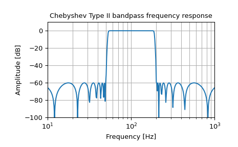

IIR digital and analog filter design given order and critical points.
Design an Nth-order digital or analog filter and return the filter
coefficients.
Parameters:
Nint
The order of the filter.
Wnarray_like
A scalar or length-2 sequence giving the critical frequencies.
For digital filters, Wn are in the same units as fs. By default,
fs is 2 half-cycles/sample, so these are normalized from 0 to 1,
where 1 is the Nyquist frequency. (Wn is thus in
half-cycles / sample.)
For analog filters, Wn is an angular frequency (e.g., rad/s).
When Wn is a length-2 sequence, Wn[0] must be less than Wn[1].
rpfloat, optional
For Chebyshev and elliptic filters, provides the maximum ripple
in the passband. (dB)
rsfloat, optional
For Chebyshev and elliptic filters, provides the minimum attenuation
in the stop band. (dB)
When True, return an analog filter, otherwise a digital filter is
returned.
ftypestr, optional
The type of IIR filter to design:
Butterworth : ‘butter’
Chebyshev I : ‘cheby1’
Chebyshev II : ‘cheby2’
Cauer/elliptic: ‘ellip’
Bessel/Thomson: ‘bessel’
output{‘ba’, ‘zpk’, ‘sos’}, optional
Filter form of the output:
second-order sections (recommended): ‘sos’
numerator/denominator (default) : ‘ba’
pole-zero : ‘zpk’
In general the second-order sections (‘sos’) form is
recommended because inferring the coefficients for the
numerator/denominator form (‘ba’) suffers from numerical
instabilities. For reasons of backward compatibility the default
form is the numerator/denominator form (‘ba’), where the ‘b’
and the ‘a’ in ‘ba’ refer to the commonly used names of the
coefficients used.
Note: Using the second-order sections form (‘sos’) is sometimes
associated with additional computational costs: for
data-intense use cases it is therefore recommended to also
investigate the numerator/denominator form (‘ba’).
fsfloat, optional
The sampling frequency of the digital system.
New in version 1.2.0.
Returns:
b, andarray, ndarray
Numerator (b) and denominator (a) polynomials of the IIR filter.
Only returned if output='ba'.
z, p, kndarray, ndarray, float
Zeros, poles, and system gain of the IIR filter transfer
function. Only returned if output='zpk'.
sosndarray
Second-order sections representation of the IIR filter.
Only returned if output='sos'.
>>> b,a=signal.iirfilter(17,[2*np.pi*50,2*np.pi*200],rs=60,... btype='band',analog=True,ftype='cheby2')>>> w,h=signal.freqs(b,a,1000)>>> fig=plt.figure()>>> ax=fig.add_subplot(1,1,1)>>> ax.semilogx(w/(2*np.pi),20*np.log10(np.maximum(abs(h),1e-5)))>>> ax.set_title('Chebyshev Type II bandpass frequency response')>>> ax.set_xlabel('Frequency [Hz]')>>> ax.set_ylabel('Amplitude [dB]')>>> ax.axis((10,1000,-100,10))>>> ax.grid(which='both',axis='both')>>> plt.show()

Create a digital filter with the same properties, in a system with
sampling rate of 2000 Hz, and plot the frequency response. (Second-order
sections implementation is required to ensure stability of a filter of
this order):
>>> sos=signal.iirfilter(17,[50,200],rs=60,btype='band',... analog=False,ftype='cheby2',fs=2000,... output='sos')>>> w,h=signal.sosfreqz(sos,2000,fs=2000)>>> fig=plt.figure()>>> ax=fig.add_subplot(1,1,1)>>> ax.semilogx(w,20*np.log10(np.maximum(abs(h),1e-5)))>>> ax.set_title('Chebyshev Type II bandpass frequency response')>>> ax.set_xlabel('Frequency [Hz]')>>> ax.set_ylabel('Amplitude [dB]')>>> ax.axis((10,1000,-100,10))>>> ax.grid(which='both',axis='both')>>> plt.show()